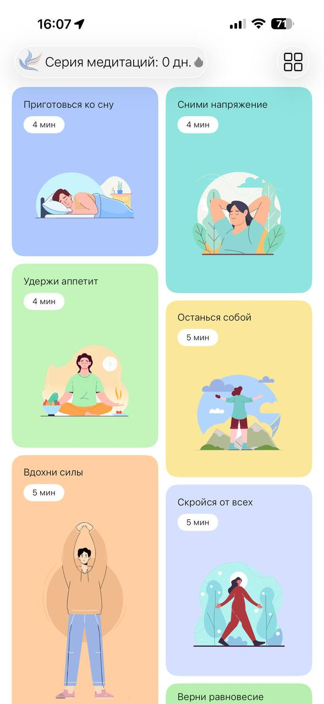
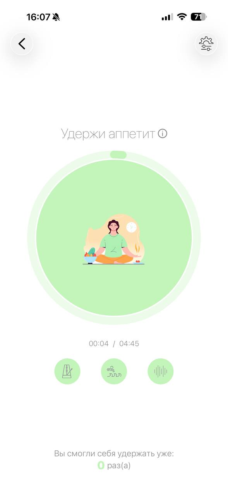
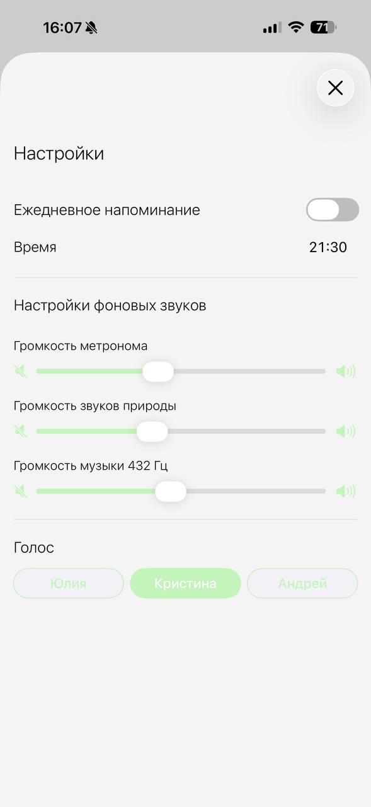
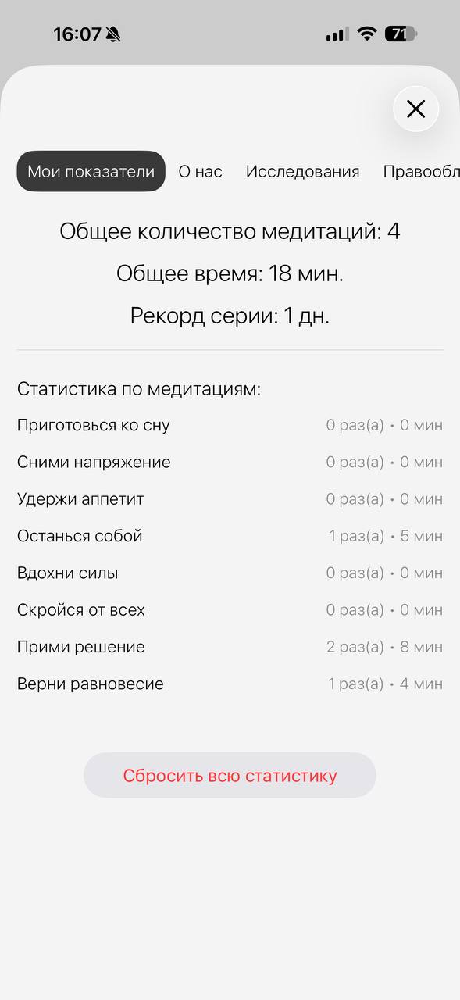

01
Joyka
Мобильное приложение коротких медитаций для людей, которые хотят снизить стресс.




Проблема
Люди, которые испытывают стресс, хотят снизить его быстро и в конкретной ситуации: перед сном, при желании сорваться на еде, перед важным решением. Длинные общие практики для этого неудобны.
Моя роль
Product Owner. Исследовал рынок, анализировал аудиторию, запускал анкетирование, формулировал сценарии и требования. Продукт делал с разработчиком и дизайнером, кода сам не писал.
Что сделано
- Продукт построен на ситуациях, а не на абстрактных практиках: 8 сценариев по 4–5 минут («Приготовься ко сну», «Сними напряжение», «Удержи аппетит», «Прими решение» и другие).
- Настраиваемая среда: метроном, звуки природы, музыка 432 Гц, три голоса, раздельная громкость.
- Механики возвращения: ежедневное напоминание, серия медитаций, личная статистика.
Результат
8сценариев в первом релизе
3голоса и 3 канала звука
Инструменты
АнкетированиеАнализ рынкаРабота с разработчиком и дизайнером
Рамка метрик: гипотезы, в проекте не измерялись
North Star: число завершённых медитаций на активного пользователя в неделю. Поддерживающие: доля пользователей, завершивших первую сессию; возврат на 7-й день; длина серии; доля завершённых сессий среди начатых.
Что бы сделал иначе
Раньше ввёл бы события аналитики и проверял, какие из 8 сценариев возвращают людей, до расширения контента.